Common name in Singhalese : Kirimakulu
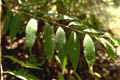
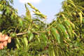
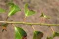
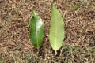
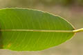
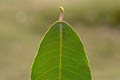
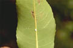
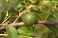
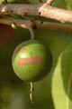
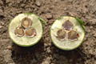
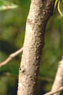
Diagnostic characters
Botany & morphology
Regeneration
Ecology
Distribution
Evergreen dioecious or monoecious tree, 6 - 9 m tall with thorny trunk and hanging branches, bark smooth. Leaves alternate, lanceolate, and crenulate. Flowers white and yellow. Fruit capsule.
Leaves simple, alternate, glabrous, elliptic-lanceolate, apex acuminate, base subacute, 7 - 12.5 x 1.75 - 3.5 cm, margin crenate; petiole short.
Inflorescence spiciform-racemose.
Flowers unisexual, dioecious or monoecious, yellow, apetalous. Male flowers many, calyx 3-lobed. Female flowers few, large; ovary glabrous, trifid style.
Fruit capsule, globose, woody, up to 3 cm in diameter, black when ripe; seeds long, pale brown.
Epigeal or modified epigeal germination.
A pioneer in marginal habitat between inner mangrove and coastal forest. From sea-level near tidal marshes and rivers, and also found in inland evergreen forests up to 250 meters.
Sri Lanka, Southeast Asia, Malaysia, and Solomon Islands. In India found in South and East
Top of the page